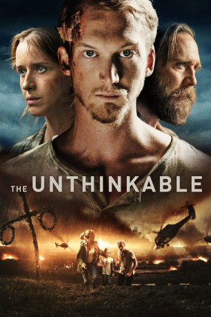

#10510 The Unthinkable - Die Unbekannte Macht
 gesehen am 15.02.2019
gesehen am 15.02.2019
 
 IMDB-Wertung: 6.8 / 10
IMDB-Wertung: 6.8 / 10  Metascore: 0
Metascore: 0 
Sprengsätze explodieren in Stockholm, es gibt Tote! Dann häufen sich mysteriöse Vorfälle, Menschen drehen durch. Es wirkt wie ein systematischer Angriff, aber durch wen? Selbst die Armee ist ratlos. Innerhalb von Stunden versinkt das Land im Chaos. Der junge Musiker Alex ist vor Jahren vor dem jähzornigen Vater aus seinem Heimatdorf geflohen. Ausgerechnet jetzt ist er zurückgekehrt, um nach dem Klavier zu suchen, auf dem er oft zusammen mit seiner großen Liebe Anna gespielt hat. Unverhofft trifft er Anna wieder, doch es ist nicht die Zeit für romantische Erinnerungen. Es geht ums Überleben!
Jahr: 2018
Dauer: 129 Minuten
FSK:
Land: Schweden Studio: Ascot Elite Entertainment GroupTonspuren:
Untertitel: Deutsch,
Auflösung: 1080p (1920x808) Größe: 10956 MB
Genre: Action, Thriller, Drama, Liebe
Regisseur: Victor Danell
Drehbuch: Victor Danell, Christoffer Nordenrot
Soundtrack: Gustaf Spetz
Darsteller:
- Christoffer Nordenrot als Alex
- Magnus Sundberg als Konny
- Yngve Dahlberg als Emil
- Tarmo Sakari Hietala als Bärplockaren
- Niklas Jarneheim als Morbror Erik
- Arvin Kananian als Sharokh
- Carlos Fernando als Polis
- Rikard Svensson als Jögga
- Erik Bolin als Insatsledare
- Carina Perenkranz als Minister
- Susanne Hörnquist als Säpoagent
- Lisa Henni als Anna
- Jesper Barkselius als Björn
- Pia Halvorsen als Eva
- Krister Kern als Kim
- Karin Bertling als Farmor
- Ulrika Bäckström als Klara
- Alexej Manvelov als Tholén
- Håkan Ehn als Lasse
- Lo Lexfors als Elin
- Liselott Lindeborg als Lenny
- Rickard Lundquist als Landers
- Johan Wåhlin als Råsmark
- Eleonor Leone als Julia
- Magdalena Eshaya als Tiggaren
- Johannes Yachouh als Midsommmarfirare
- Lukas Ahlin als Midsommarfirare
- Måns Ahlin als En av de svenska ministrarna
- Linda Kulle als Pettersson
- David Laib als En av de svenska ministrarna
- Mikael Nyborg als En av soldaterna
- Pauline Wågström als Midsommarfirare
Datei: X:\2018(N-Z)\Unthinkable - Die Unbekannte Macht, The (2018, FSK, 1920x808).mkv seit 18.01.2019
Festplatte: HD 2018(G-Z)-2019(A-Z)
 Es gibt insgesamt 172 Filme in der Gruppe '2018(N-Z)'
Es gibt insgesamt 172 Filme in der Gruppe '2018(N-Z)'